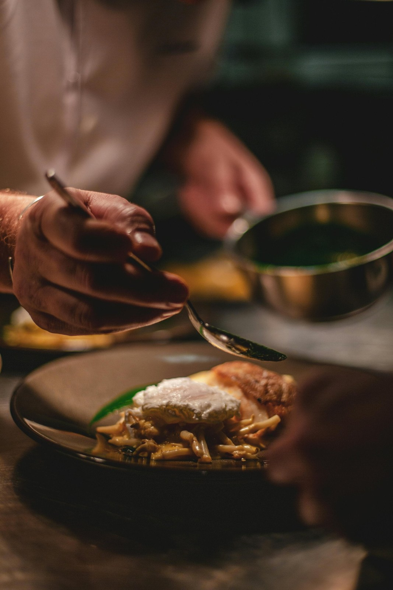
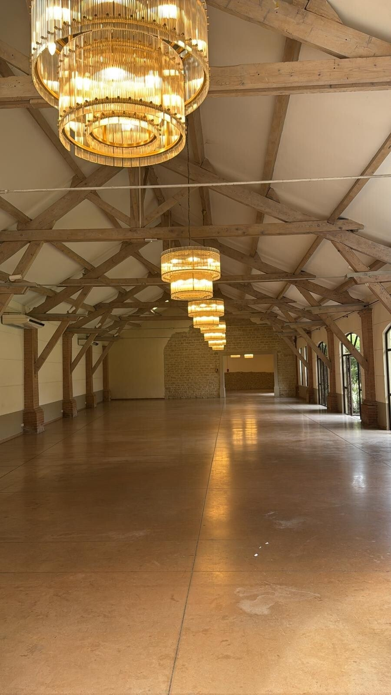
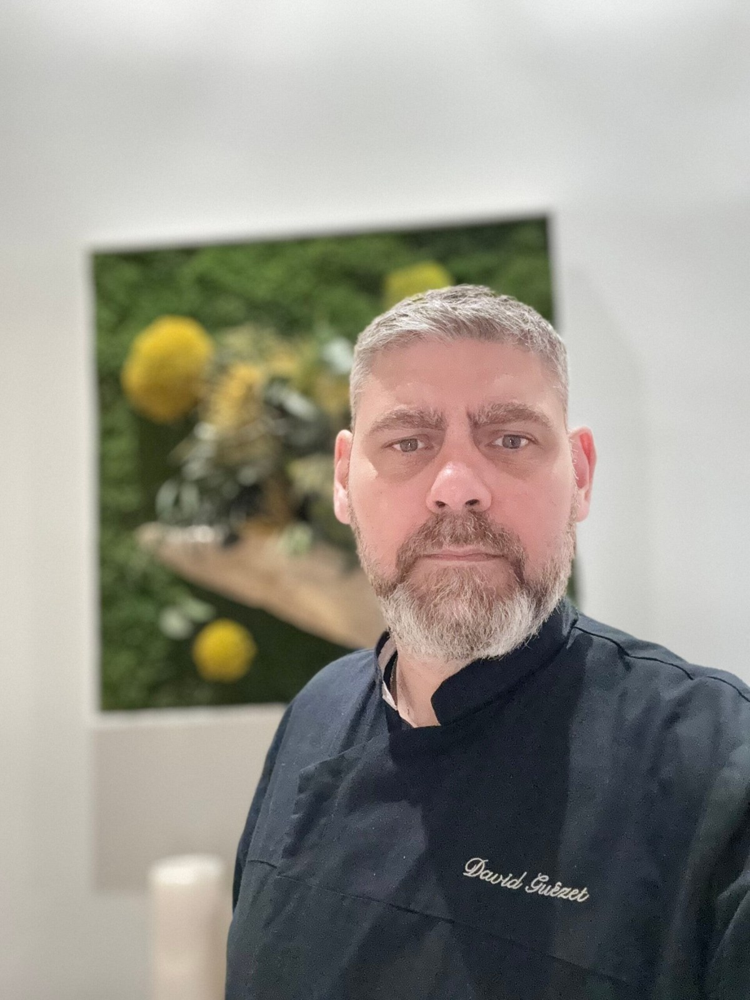

DAVID GUEZET · LA PART DU CHEF
Mon histoire culinaire
Mon histoire culinaire
Un héritage du goût, une passion servie à votre table
Depuis l'enfance le goût du bien manger a façonné ma vie. Des souvenirs de cuisine familiale aux grandes tables étoilées, mon parcours est guidé par une exigence simple: allier authenticité, générosité et excellence.
J'ai naturellement suivi la voie de la passion. Formé à l'école hôtellière de Tain l'Hermitage, j'y ai acquis les fondations rigoureuses de la gastronomie française, un héritage éthique et technique qui m'accompagne depuis. Ma carrière m'a conduit dans de nombreux établissements dont la Villa Augusta des frères Pourcel.
Je souhaite désormais rapprocher la haute cuisine de l'intimité de votre maison

Notre expertise à votre service
Avec 30 ans d'expérience en cuisine provençale, je me distingue par ma capacité à adapter les recettes traditionnelles avec des produits locaux, créant ainsi une cuisine du monde unique. Mon expérience professionnelle me permet d'offrir un service personnalisé et exceptionnel dans le Lubéron et ses alentours. Je suis spécialisé dans la cuisine provençale avec des produits locaux.

L'art de s'adapter à vos envies
Ce qui est le plus important pour moi, c'est de m'adapter au plaisir du client et à la quantité de convives à servir. Que ce soit pour un dîner intime ou vos évènements, je m'engage à créer une expérience culinaire sur mesure qui répond à vos attentes et émerveille vos invités. Nous sommes spécialiste dans le service traiteur de mariage et pour les particuliers.
Contactez-nous
Une ambiance de partage et de convivialité
L'ambiance que je crée avec ma cuisine se décrit en deux mots : plaisir visuel et gustatif. Chaque plat est une œuvre d'art, conçu pour éveiller vos sens et vous offrir un moment de pur bonheur. Mon objectif est de transformer chaque repas en une expérience mémorable, empreinte de convivialité et de partage. Travaillons ensemble pour vos futurs repas.
"Un moment de partage et de convivialité, le plaisir du goût... C'est exactement ce que David nous a offert !"
Un client satisfait